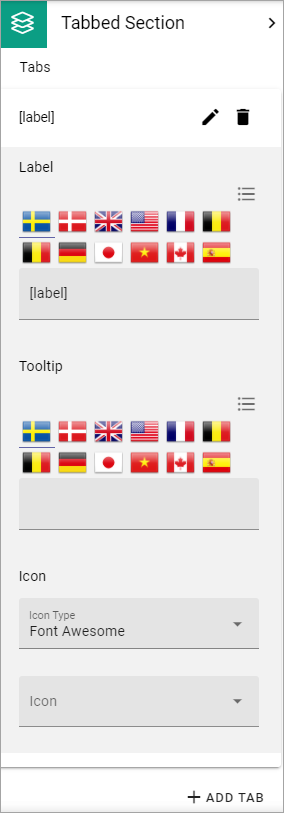
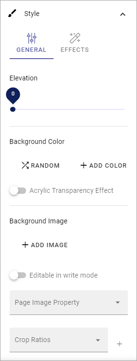
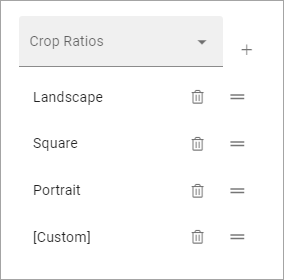
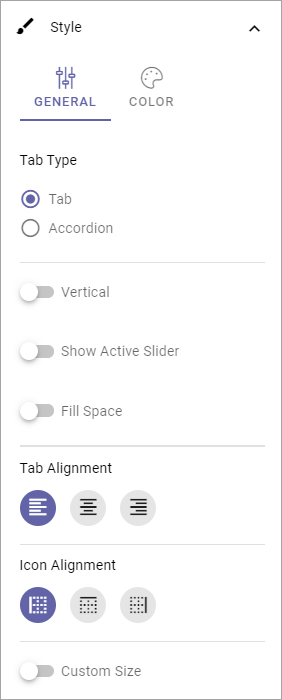
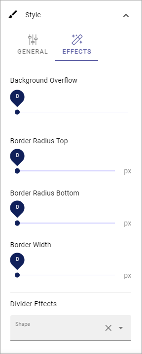

Settings for Sections¶
The following settings are available when working with Sections:

General¶
What you can set under General depends on if you select a section with columns or a section with tabs.
General settings for a section with columns¶
For a section with columns, the following can be set:

- Width Type: Set dynamic width (“Full Page”) or a fixed width in pixels. When you have selected Fixed, a slider is shown where you can set the width.
- Columns: Using the sliders, set a width for each of the column. Default = same width for every column.
- Add Column: You can add a column if needed. The same settings as above can then be used for the new column.
To remove a column, click the dust bin.
For columns with fixed width, the following can be set:

Use the slider to set the fixed column width. You can also set Alignment for the content in the section.
General settings for a section with tabs¶
For a section with tabs, the following can be set:

- Tabs: Here you can edit the settings for each tab, by clicking the pen. See information about these settings below.
- Add tab: Ta add a new tab, click here. You edit the settings as described below. To remove a tab, click the dust bin.
By clicking the pen, the following can be set for a tab:
- Label: If a label should be shown for the tab, add the label here.
- Tooltip: If a tooltip should be shwon for the tab, add it here.
- Icon: First select the “Icon Type” and then select the icon in the list below, if an icon should be shown. (If no icon should be shown, just don’t select an icon, it doesn’t matter that an Icon Type is selected.)
Spacing¶
Here you can set the following:

- Section Padding: Here you can set some padding within the active section.
- Column Spacing: Here you can set the spacing between the columns in this section.
- Block Spacing: You can set spacing between blocks in this section.
- Minimum Height: You can make sure that this section always has a minimun height, regardless of what is shown in the section. Use the slider to set the minimum height in pixels.
- Use Full Height: This option is a way of making sure a layout with more than one column or section is balanced. When this option is selected, all adjacent sections has the same length. See below for examples.
Here’s an example with “Use Full Height” on:

And here’s the same page with the option off for the left section:

Style¶
Available settings for Style depends on if it’s a section with columns or a section with tabs.
Style settings for columns¶
If it’s a section with columns, this can be set for Style, for the active section:
At the bottom, the selected Crop Ratios are listed, for example:
- Elevation: With this setting you can make the content of the section “stand out” from the page. Use the slider to set how much.
- Background color: A default background color for sections are set in Omnia Admin. You can set another background color for this section here, if needed. You can try out RANDOM or set the color using ADD COLOR.
- Background image: Another option is to use an image as background in this section. When you click “Add Image”, the Media Picker starts. See this page for more information: Media Picker
- Editable in Write Mode: As Default, Design Mode is needed to edit background image. If it should be possible using Write Mode as well, select this option.
- Crop Ratios: Crop Ratios are set up in Omnia Admin for the Media Picker. Here you can decide which of these should be available for authors to use in this section. To add a Crop Ratio, select it in the list and click the plus. To remove a Crop ratio, click the dust bin. You can also set the order in which the Crop Ratios are shown, by drag and drop.
For more information about Crop Ratios, se this page: Media Picker Settings
Style settings for tabs¶
If it’s a section with tabs, additional settings can be set for Style, for the active section:
(Not all options are shown in the image, but listed below).
- Tab Type: You can select “Tab” or “Accordion” as Tab Type.
- Vertical: If the labels for the tabs should be shown vertically, select this option.
- Show Active Slider: If the active tab should be indicated, select this option.
- Fill Space: If the tab labels should fill the available space, either horisontally or vertically, depending on what you have chosen, select this option.
- Tab Alignment: Here you can set Alignment for the tab labels.
- Icon Alignment: If you are using an icon you can set Icon Alignment within the available space for the icon.
- Custom Size: If you would like to set minimum height and width for the tabs, select this option, and then use the sliders.
- Border Radius: Use this slider to set the border radius between tabs in the section.
- Color: Select “Color” for various color settings for the tabs.
- Collapsed Accordion: Used for Tab Typ Accordion only. If this option is selected, only one accordion will be expanded at a time.
- Flat Header: Per default, the tab is slightly elevated. Select this option to make it flat.
Effects¶
Additional effects are avilable here, for both sections with columns and sections with tabs:
Try them and see the effect - a preview is shown in the active section.
And don’t forget to test Divider Effects - there are som really cool effects in that list.
Block Theming¶
Theme for blocks are set up in the Business Profile settings. If you would like to change them for this section, select “Custom Theme”:

What you can select here is the same as for the whole page, see: Layout Theming
Header¶
Here you can set the following:

- Title: If you want a Title to be displayed for the section, add it here. Not mandatory.
- Icon Type/Icon: If you would like to use an icon, first select type and then icon from the list.
- Custom Settings: If you don’t want to use the global settings for the business profile, for this section, Select Custom Settings.
The global settings are set in Omnia Admin, see this page: Content Header (Business Profile)
When selecting custom settings, the following is available:

This is the same settings as Content Header settings for the Business Profile, see the link above.
Targeting¶
A section can be targeted by using this setting:

Targeting must have been setup in Omnia Admin for this to work, see that section on this page: Properties
To set up targeting for the section, do the following:
- Click “Add Targeting Filter”.
- Select Property for Targeting.
- Select one or more children for the property.
Or:
- Select “Include Children”, to include all children pf the property.
- Click “Add Targeting Filter” to add additional filters.

To remove a targeting filter, just click the X.